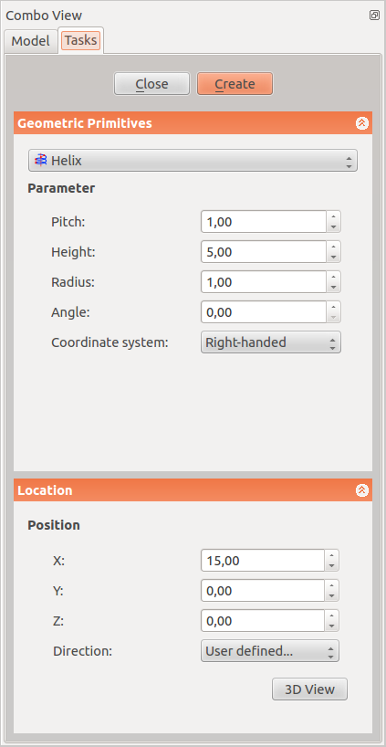
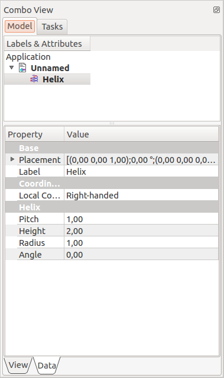

Description
Dans la boîte de création de primitives est disponible un outil de création d'hélice.
La boîte de dialogue de création de primitives est accessible par l'icône CreatePrimitives  situé dans le menu Part Workbench ou la barre d'outils Part.
situé dans le menu Part Workbench ou la barre d'outils Part.
Utilisation
| 
|
Paramètres
- Pitch:Le pas correspond à l'espace entre deux spires consécutives de l'hélice et mesurée le long de l'axe principal de cette hélice.
- Height: La hauteur correspond à la hauteur totale de l'hélice la hauteur est mesurée le long de l'axe principal de l'hélice.
- Radius: Le rayon correspond au rayon du cercle construit par l'hélice en affichant la partie supérieure/inférieure de l'hélice.
- Angle: Par défaut, l'hélice est construite sur un cylindre imaginaire. De cette manière, il est possible de construire l'hélice sur un cône imaginaire. Cet angle correspond à l'angle du cône. La valeur doit être comprise entre -90° et +90°.
- Right-handed or Left-handed: Ce paramètre spécifie le sens de direction de l'hélice.
Direction
- X: L'axe principal de l'hélice se trouve sur l'axe x, la valeur est entrer dans ce champ.
- Y: L'axe principal de l'hélice se trouve le long de l'axe y, la valeur est entrer dans ce champ.
- Z: L'axe principal de l'hélice se trouve le long de l'axe z, la valeur est entrer dans ce champ.
- Direction: Par défaut, l'axe principal de l'hélice est de l'axe z. Ici vous avez la possibilité de modifier l'axe principal de l'hélice. Si vous sélectionnez le paramètre "Défini par l'utilisateur ...", vous serez invité à indiquer l'axe principal de l'hélice en entrant les coordonnées de son vecteur.
- 3D View: Vous permet de sélectionner le centre dans la vue 3D
|
Options
Propriétés
Une fois l'hélice créé vous avez la possibilité de modifier ses paramètres.
|

|
Les paramètres de ce menu sont similaires que les réglages décrits plus haut.
Base
- Placement: donne le déplacement ou (et) la rotation a donner à l'hélice.
- Angle:
|
{kind=link}
{kind=link}
{kind=link}